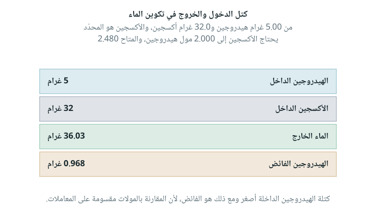

الحساب المتكافئ
Stoichiometry
حساب كميات المتفاعلات والنواتج من معاملات معادلة موزونة، ويحدّد فيه المتفاعل الذي ينفد أولًا سقف الإنتاج النظري ويترك الآخر فائضًا.
الحساب المتكافئ تحويل بين الكميات في تفاعل كيميائي بالاعتماد على معاملات المعادلة الموزونة. المعاملات تعطي النسبة المولية التي يتفاعل بها كل زوج من الأنواع، وهي محصّلة حفظ الذرات لا اختيارًا حرًّا من الكاتب.
الإجراء ثابت: تُوزن المعادلة، تُحوَّل كتل المتفاعلات إلى مولات، تُقسم مولات كل متفاعل على معامله، والرقم الأصغر هو المتفاعل المحدّد. يُحسب الناتج من المتفاعل المحدّد وحده، ويُحسب الفائض من الآخر بطرح ما استُهلك. أي محاولة لحساب الناتج من المتفاعل الفائض تعطي كتلة أكبر من الممكن، وهي أشهر أخطاء هذا الحساب.
الأرقام الناتجة هي حدّ أعلى: المردود النظري يفترض تفاعلًا كاملًا ونقاءً تامًّا وبلا تفاعلات جانبية. المردود الفعلي أقل دائمًا، والنسبة بينهما تُسمّى المردود المئوي، وهي من أهم مؤشرات جدوى العملية الصناعية.
الآلية
كيف يحدث الأمر على مستوى الجسيمات أو المتغيّرات المباشرة
سبب النسبة الثابتة هو حفظ الذرات: لا تفنى ذرة ولا تُخلق، فعدد ذرات كل عنصر في المتفاعلات يساوي عددها في النواتج. المعاملات هي أصغر مجموعة أعداد صحيحة تحقق هذا الشرط، وهي تحدد النسبة التي تختفي بها المتفاعلات وتظهر بها النواتج. حين لا تكون الكميات المتاحة بهذه النسبة، ينفد أحد المتفاعلات أولًا، فتتوقف الزيادة في الناتج مهما بقي من الآخر. لا شيء في الميكانيزم يمنع بقاء الفائض، لكن لا شيء فيه يسمح بتجاوز النسبة، ولهذا يكون المتفاعل المحدّد سقفًا لا خيارًا.
الأرقام والوحدات
العلاقات والوحدات والنطاقات العددية التي تسند الشرح
في 2H₂ + O₂ → 2H₂O تتفاعل 4.032 g هيدروجين مع 31.998 g أكسجين لتنتج 36.030 g ماء. وبإدخال 5.00 g هيدروجين (2.480 mol) و32.0 g أكسجين (1.000 mol): يحتاج الأكسجين إلى 2.000 mol هيدروجين فقط، فيكون الأكسجين هو المحدّد. الناتج 2.000 mol ماء، أي 36.03 g، ويبقى 0.480 mol هيدروجين فائضًا، أي 0.968 g. لاحظ أن كتلة الهيدروجين الداخلة أصغر، ومع ذلك هو الفائض: المقارنة تكون بالمولات مقسومة على المعاملات، لا بالكتل.
الفرق الدقيق
المفهوم الملتبس الذي يُخلَط به، وأين ينفصلان
الخلط الأول بين الحساب المتكافئ والحركية: الأول يجيب عن «كم»، والثانية عن «كم بسرعة»، ويمكن أن يكون التفاعل مكافئًا تمامًا وبطيئًا جدًّا. الثاني أن المتفاعل المحدّد ليس صاحب الكتلة الأصغر ولا صاحب المولات الأقل: المعيار هو المولات مقسومة على المعامل. الثالث بين المردود النظري والفعلي: الأول رقم حسابي لا يقاس، والثاني يقاس بالوزن بعد التنقية. الرابع بين الكتلة المولية والكتلة الجزيئية، وبين المعامل المتكافئ والأسّ في الصيغة: الأول يوضع قبل الصيغة ويُوزَّن، والثاني داخلها ويحدّد الهوية.
حدود التعريف
أين ينكسر التعريف أو النموذج وما الذي لا يفسّره
يفترض الحساب تفاعلًا واحدًا كاملًا بمتفاعلات نقية، وهذا نادر خارج الورقة. التفاعلات الجانبية تستهلك جزءًا من المتفاعل المحدّد في نواتج أخرى، فتنخفض الانتقائية ولو بلغ التحويل حدّه. والتفاعلات المحدودة بالتوازن لا تبلغ الناتج النظري أبدًا، لأن الاتجاه العكسي يعمل قبل استهلاك كل المتفاعل. ولا يعطي الحساب أي معلومة عن الحرارة أو الزمن أو الحاجة إلى حفاز، فحساب المتكافئ شرط لازب لتصميم المفاعل وليس بديلًا عنه.

| الكمية | القيمة | المصدر |
|---|---|---|
| الكتلة المولية للهيدروجين الجزيئي | 2.016 غرام/مول | [1] |
| الكتلة المولية للأكسجين الجزيئي | 31.998 غرام/مول | [1] |
| كتلة الماء الناتجة من 5.00 g هيدروجين و32.0 g أكسجين | 36.03 غرام | [2] |
| الهيدروجين الفائض بعد اكتمال التفاعل | 0.968 غرام | [2] |
المصادر
- 1 Chemistry 2e — 4.1 Writing and Balancing Chemical Equations — OpenStax, Rice University. openstax.org/books/chemistry-2e/pages/4-1-writing-and-balancing-chemical-equations · اطُّلع عليه 2026-11-16
- 2 Chemistry 2e — 4.3 Reaction Stoichiometry — OpenStax, Rice University. openstax.org/books/chemistry-2e/pages/4-3-reaction-stoichiometry · اطُّلع عليه 2026-11-16
- 3 Chemistry 2e — 4.4 Reaction Yields — OpenStax, Rice University. openstax.org/books/chemistry-2e/pages/4-4-reaction-yields · اطُّلع عليه 2026-11-16
استشهد بهذا المصطلح
الصيغتان مبنيتان من بيانات الصفحة نفسها: العنوان والتاريخ ورابط النسخة المنشورة.
الحساب المتكافئ — Stoichiometry. (2026). ديوان المعرفة — انفراد. https://infiradev.com/diwan/terms/stoichiometry.html
@misc{stoichiometry2026,
title = {الحساب المتكافئ},
titleaddon = {Stoichiometry},
howpublished = {{ديوان المعرفة — انفراد} — مرجع علمي عربي},
year = {2026},
url = {https://infiradev.com/diwan/terms/stoichiometry.html},
urldate = {2026-11-16},
note = {مراجعة علمية: مراجعة آلية — ديوان المعرفة (روابط المصادر + عقد المحتوى + وجود الرسم) 2026-11-16}
}
راجعه: مراجعة آلية — ديوان المعرفة (روابط المصادر + عقد المحتوى + وجود الرسم) 2026-11-16 · 2026-11-16 · آخر تحديث 2026-11-16